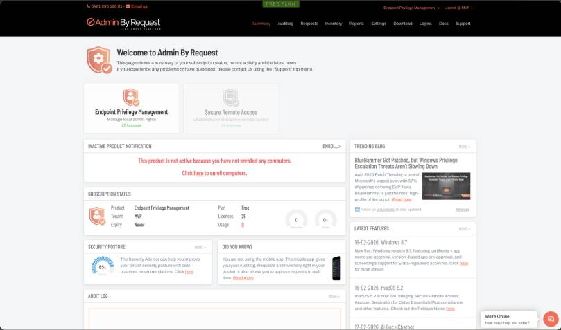

Advertisement: This post is the first episode of my unboxing series in partnership with Admin By Request. As always, the walkthrough, the opinions and the experiences are 100% my own.
Welcome to the first episode of my unboxing series! In this series I look at the products of Admin By Request in detail — and I start with the product the company is best known for: Endpoint Privilege Management (EPM). In this blog post I explain what Admin By Request is, how the solution removes standing local admin rights without blocking people from doing their work, and what I would configure first. If you prefer watching over reading, the full video episode is here:
Why should I care about privilege management?
When I look at the future, I see three technologies that are essential: data, AI — which everyone talks about — and security. And security is the foundation of everything. Without strong security there is no successful AI strategy. Security is your insurance that everything in the company keeps running.
From my own experience, privilege management is one of the biggest security gaps in organizations. I worked in an environment with 120,000 devices, and there were many valid use cases why users needed admin rights: legacy software, applications bound to one specific device that no longer get updates, or users who simply need to change a setting on their machine. At the same time, local admin rights are the door opener for bad actors — for ransomware and supply chain attacks. That is the conflict every security team faces: users need rights to do their work, and you want to remove those rights to keep the environment secure.
What is Admin By Request?
Admin By Request is a zero trust endpoint platform, and EPM is its core product: it removes permanent local admin rights from your devices and replaces them with controlled, temporary elevation. Users keep a way to do everything they legitimately need — but nobody carries standing admin rights around anymore, and every elevation is documented.
The solution consists of a small client for the endpoint and a cloud portal for the admin side. Clients exist for Windows, macOS and Linux, plus Windows Server and mobile — which makes it, in my opinion, the most complete EPM product currently on the market. The installers are generated and signed for your tenant, and you distribute them manually or through your existing software distribution, for example Microsoft Intune.
One point that matters a lot for European companies: Admin By Request operates a dedicated data center in Frankfurt. Audit logs, elevation requests, configuration data — everything stays in Germany. If you have ever introduced a new endpoint tool and had the works council discussion about employee monitoring and data leaving the EU, you know how much easier this makes the conversation. Together with the configurable privacy settings, this is a strong GDPR story.
How does the elevation actually work?
There are two core patterns, and they cover almost every real-world case:
1. Per-process elevation (Run as Admin). A user needs to install or run one specific application with admin rights. Instead of elevating the whole user, only that single process gets elevated — the user drags the installer onto Admin By Request, provides a reason, and the process runs with admin permissions. When the process ends, the rights end with it. For me this is the real game changer, because it covers the most common request (“I just need to install this one tool”) without ever creating an admin user.
2. Timed admin sessions. For everything that is not a single process — think of a setting that genuinely requires administrator access — the user requests an admin session with a short justification. An admin reviews the request in the portal, approves it, and the user gets admin rights for a defined window with a visible timer. When the session ends (or the user clicks finish), the rights are revoked and the device is back to a normal user account.
A practical example from my own daily work: on a Mac, enabling the screen recording permission for Microsoft Teams requires local admin rights — a one-minute task that would classically justify a permanent admin account. With Admin By Request it is a short, approved, fully audited session instead.
Two details I really like on top: you can require multi-factor authentication for elevation — a Microsoft sign-in window against Entra ID instead of a local password — and every file is checked by a built-in malware scan before it is allowed to run elevated. If something malicious asks for admin rights, you get a real-time notification instead of an incident report three weeks later.
What does the admin side look like?
The portal is refreshingly straightforward. The summary page shows your subscription, the incoming requests, your security posture score, and product news — and there is a built-in chat if you have a question, so you are not waiting on a support ticket for a quick answer.

Two things I recommend configuring right at the start:
Single sign-on. The initial login is username and password, and in an enterprise environment that should not stay this way. Connect the portal to Microsoft Entra ID, and from then on admins sign in through your identity provider, including MFA and conditional access.
Tenant settings. This is where the solution adapts to your organization:
- Identity: An app registration connects Entra ID (or Google and other providers), which brings your groups into the tool — the basis for scoped configurations.
- Data & privacy: You decide what is visible. Requests can be anonymized so the approval decision is made on the description, not the person, and you control the data retention period. This is the section your works council will want to see.
- API keys: For automation and integrations there is a documented API — pull audit data into your SIEM or build your own workflows.
- Auto-update: The endpoint client keeps itself current, so you do not add another agent to your patching backlog.
Which guardrails do I get?
Removing admin rights only helps if the temporary elevation cannot be abused. This is where Admin By Request stands out for me:
- Lockdown: The classic trick with temporary admin rights is to quickly create a new local user and add it to the administrators group — permanent admin through the back door. Lockdown blocks exactly that: during an elevated session, user groups, network settings and other critical areas can be hidden and protected against manipulation.
- Intune compliance gate: You can require that a device is compliant in Intune before it may request elevation at all. Non-compliant device, no admin rights.
- App control with machine learning: Frequently used applications can be pre-approved so users are not blocked and admins are not flooded. And if you approve the same application five times, it becomes auto-approved — pre-validated by your own decisions.
- Sub-settings: You define a global default and override it for specific groups, OUs or device types — for example, lab devices may elevate without approval while everyone else needs one. Scoping comes from your Entra groups.
- Branding: Your company name, your logo, your instructions and an optional code of conduct in the prompts — so the experience feels like an internal service, not a third-party tool.
What about reporting and auditing?
Every elevation produces usable data. Dashboards show where requests come from, which users raise them and which applications run elevated. The inventory lists every client with device details and a per-machine audit log of elevations and admin sessions. Environment-wide, you can trace afterwards who changed what on which device and when — and what is collected is configurable, which closes the loop back to the privacy settings. The documentation is genuinely good if you want to go deeper, with step-by-step guides for things like the Entra ID connect.
How do I get started?
The entry barrier is low: on adminbyrequest.com there is a Free Plan — name, company, email, and within a few seconds you have a full login with 25 licenses. That is enough to install the client on a handful of test devices and build a proper proof of concept in your own environment before you talk budgets.
My verdict
You know I care about endpoint security — I recently wrote about protecting AI agents with Defender for Endpoint, and removing standing local admin rights is the same story one layer deeper: shrink what an attacker can do on the device in the first place. Admin By Request delivers that with a user experience people actually accept, guardrails like lockdown and malware scanning, all major platforms, and the Frankfurt data center as the European trust argument. In my opinion it is the most complete EPM product on the market right now.
My recommendation: create the free trial, roll the client onto a few test devices, and see how it behaves in your environment. In the next episode of this series I will unbox the next Admin By Request product in the same hands-on way.
I hope this is a little help.
Stay healthy, Cheers Jannik